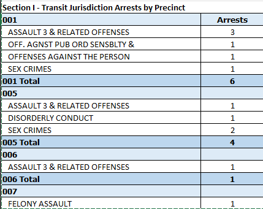
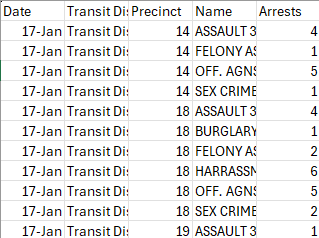
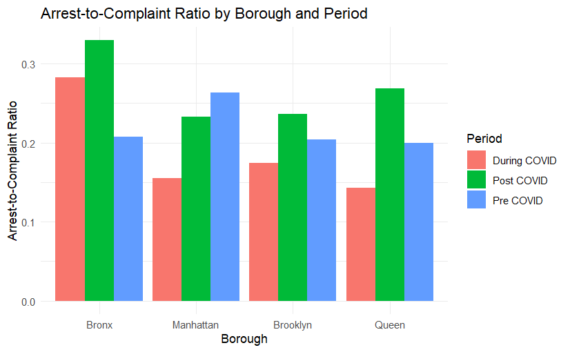
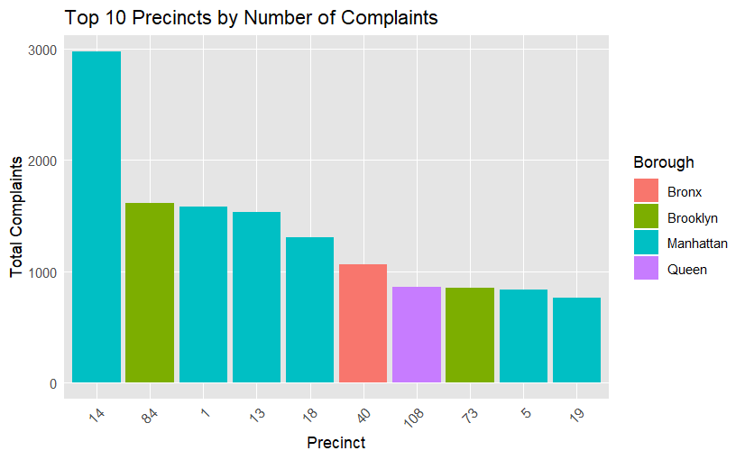

# A tibble: 6 × 6
Date District Precinct Name Complaints Period
<date> <chr> <dbl> <chr> <dbl> <chr>
1 2017-01-01 Transit District 01 14 ASSAULT 3 & RELATED… 4 Pre C…
2 2017-01-01 Transit District 01 14 FELONY ASSAULT 1 Pre C…
3 2017-01-01 Transit District 01 14 OFF. AGNST PUB ORD … 5 Pre C…
4 2017-01-01 Transit District 01 14 SEX CRIMES 1 Pre C…
5 2017-01-01 Transit District 01 18 ASSAULT 3 & RELATED… 4 Pre C…
6 2017-01-01 Transit District 01 18 BURGLARY 1 Pre C…Final Project
Introduction
Final Project : Analysis on MTA Crime Data - Is the MTA NYC Subway overall better, worse, or about the same as they were pre-pandemic?
We will be using the following crime data sources from here. For the purpose of this project, we will only be focusing on Arrests for Offenses Described in Administrative Code 14-150(d) Occurring in Transit Jurisdiction limited to MTA Subway within NYC(excluding Staten Island). The data time frame is from 2017-2024 giving a fair frame to compare data from pre-Covid and post-Covid.
However, Precinct sectors do not mean anything because the average person does not know the location behind all the precincts. As a result, I created a file named Precinct Location by locating the area here. I am able to then aggregate the area by boroughs to compare where arrests and complaints are reported.
Data Cleaning
Here is a snippet of the original data format:

The issues:
- There is no date format
- The crime types are under each Precinct
- I need Transit District and Precinct in their own separate columns
After running the following code:
#Python Code to transpose data
import pandas as pd
import csv
import requests
import os
class Parse:
def __init__(self):
self.code = 0
self.district = None
def parse(self, line, time):
if len(line) < 2 or line[0] == '' or 'total' in line[0].lower():
return
if line[0].split(' ')[0].isdigit():
self.code = int(line[0].split(' ')[0])
return
if 'transit district' in line[0].lower() and line[0].split(' ')[-1].isdigit():
self.district = line[0]
return
if line[1].rstrip('.0').isdigit():
if self.district is not None:
return [time, self.district, self.code, line[0], line[1]]
return [time, '', self.code, line[0], line[1]]
return None
if __name__ == "__main__":
month = 1
year = 2017
output_file = open('output.csv', 'w', newline='')
output_file_writer = csv.writer(output_file)
title = ['Date', 'District', 'Precint', 'Name', 'Arrests']
# title = ['Date', 'Precint', 'Name', 'Arrests']
output_file_writer.writerow(title)
while not (month == 7 and year == 2024):
file_month_year = f"{month:02}-{year}"
parser = Parse()
if not os.path.isfile(file_month_year+'.xlsx'):
dls = 'https://www.nyc.gov/assets/nypd/downloads/excel/analysis_and_planning/transit-bus-crime-reports/'+str(year)+'/complaints-in-transit-report-'
match month, year:
case 10, 2022:
dls = dls+'oct-'+str(year)+'.xlsx'
case 11, 2022:
dls = dls+'nov-'+str(year)+'.xlsx'
case 12, 2022:
dls = dls+'dec-'+str(year)+'.xlsx'
case _:
dls = dls+file_month_year+'.xlsx'
resp = requests.get(dls)
with open(file_month_year+'.xlsx', 'wb') as output:
output.write(resp.content)
output.close()
table = pd.read_excel(file_month_year+'.xlsx')
table.to_csv(file_month_year+'.csv', index = None, header=True)
with open(file_month_year+'.csv', mode = 'r') as file:
csvFile = csv.reader(file)
for line in csvFile:
data = parser.parse(line, file_month_year)
if data is not None:
output_file_writer.writerow(data)
file.close()
month+=1
if(month > 12):
month%=12
year+=1
output_file.close()Here is a snippet of the altered data format:

Loading the Data
The following code will load the necessary packages needed to answer the our primary question: Is the MTA NYC Subway overall better, worse, or about the same as they were pre-pandemic. The code will pull up the output csv file created earlier from the python file.
Complaint & Arrest Data - Data Wrangling
Since we are determining data from different time periods it would make sense to categorize by adding in a Period column that aggregates data into “Pre Covid”, “During Covid” or “Post Covid”. In our project Pre Covid will be data from Jan 1st, 2017 to Feb 29th, 2020. During Covid will be data from March 1st, 2020 to June 30th, 2021. Finally, Post Covid will be data from July 1st, 2021 to present time. The code also reformat the date into Month/Day/Year.
# A tibble: 6 × 6
Date Precinct Crime Arrests Address Period
<date> <dbl> <chr> <dbl> <chr> <chr>
1 2017-01-01 1 FELONY ASSAULT 3 16 Ericsson Pl… Pre C…
2 2017-01-01 1 FORCIBLE TOUCHING 1 16 Ericsson Pl… Pre C…
3 2017-01-01 1 MISCELLANEOUS PENAL LAW 1 16 Ericsson Pl… Pre C…
4 2017-01-01 1 SEX CRIMES 2 16 Ericsson Pl… Pre C…
5 2017-01-01 5 FORCIBLE TOUCHING 1 19 Elizabeth S… Pre C…
6 2017-01-01 5 OFFENSES AGAINST THE PERSON 5 19 Elizabeth S… Pre C…Merging Data
By merging the data we are able to see the complaints by boroughs. We are able to identify which areas are reeving more complaints and which areas are receiving less complaints. As a result, we can see which areas are over saturated or unsaturated in law enforcement.
Now that we all the total complaints for each boroughs in different time period, it wouldn’t be fair to judge only by complaints. There are many variables that may affect our primary goal such as false reports and banter complaints. To create a successful metric that determines whether Pre-Covid was safer than Post-Covid we used Arrest to Complaint Ratio. The formula to reach this metric will be:
- Arrest / Complaints = Arrest-to-Complaint (Very Simple!)
The above code combines the complaint and arrest data to include borough information. It then calculates the total number of complaints and arrests for each borough during different time periods and organizes the time periods in sequential order: “Pre COVID,” “During COVID,” and “Post COVID.”
Arrest-to-Complaint Ratio by Borough and Period
From the graph, it is clear the Bronx consistently has high arrest-to-complaint rates suggesting stronger enforcement or higher arrest rates relative to complaints during and post-COVID-19.Our findings align with trends discussed in a Biomedcentral article, which reported significant increases in complaints during COVID-19, particularly for assault and harassment. However, our results add granularity by showing how arrest-to-complaint rates varied by borough and over time.

Top 10 Precincts by Number of Complaints
Precinct 14 and the 5 other precincts ranking in the top 10, suggests Manhattan may be a major hotspot for transit-related incidents. This complements findings from the literature, which noted a decrease in the proportion of arrests in Manhattan after the Subway Safety Plan, suggesting enforcement efforts may have shifted to other boroughs.

Conclusion for MTA Subway Safety
It is clear that MTA subway safety is worse compared to pre-pandemic. Almost every borough, with the exception of Queens has seen an increase in crime rate. We observed a marked dip during early COVID-19, followed by a steady recovery and peak in 2024, indicating intensified enforcement efforts post-pandemic. Our analysis aligns with findings from the Subway Safety Plan, which reported an increase in harassment-related arrests.